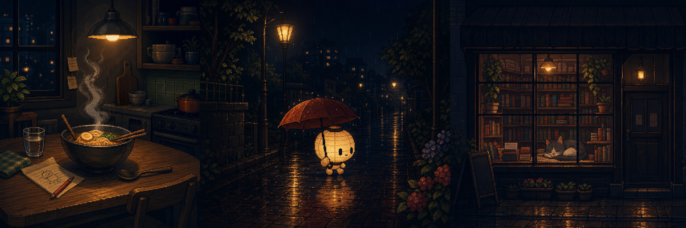

01
今天没有等到好消息，但我给自己煮了一碗面。
广州 · 22:47夜间休息室 · 2026.07.17
有些损失还没有被接受，有些担心也不会立刻消失。
但现在，你可以先不做决定。在这里坐一会儿。
不预测，不劝你振作，也不急着给答案。
灯还亮着，热水也还在冒气。
01 / 先说说此刻
不需要填写量表，只选一句最接近的。
今晚，你更接近
没有正确答案，也不会留下公开记录。
今晚，你选择了
此刻有 2,146 个人也在这里
02 / THE QUIET ROOM
不能发言，没有头像，也不会比较谁失去得更多。大家只是让一扇窗亮着，安静地一起待五分钟。
05:00
386 人觉得疲惫
241 人选择先休息
97 人暂时离开数字
184 人正在安静坐着
03 / 明天再决定
冲动不一定是错误，但它可以等情绪稍微平静后再被看见。内容只保存在你的设备上。
“这件事还没有解决，但今晚的你已经不用继续处理它了。”
已经替你收好
现在不用继续处理它。去喝点水，或者看看窗外。
04 / 世界还有灯亮着